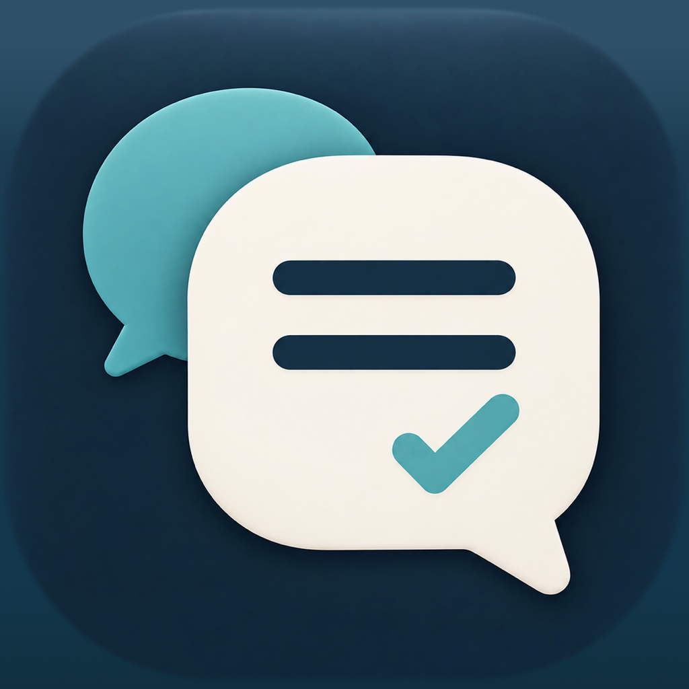

話しながら、記録する
Macで流れる音声とマイクの音声を録音。会議に参加しながら、文字起こしを進めます。

ギジログ GijilogプライバシーMACで使う、会議の記録
話し合ったこと。決まったこと。これからやること。
ギジログが会議の音声を記録し、読み返せる議事録に整理します。
macOS 15以降 · OpenAI APIキーが必要です。API利用料は別途かかります。
Macで流れる音声とマイクの音声を録音。会議に参加しながら、文字起こしを進めます。
録音中は30秒ごとに議事録の更新を試みます。話題ごとの論点と決定事項、最後にアクションをまとめます。処理時間は通信や音声の状況で変わります。
根拠となる発言を読み返し、音声を聞き直せます。重要な判断は、AIの要約と原文を照らして確認できます。
GOOGLE CALENDAR · テスト提供中
設定でGoogleアカウントを接続し、読み取るカレンダーを選びます。これからの予定を表示し、予定名を議事録のタイトルに使えます。
このMacと対象の予定で自動録音を有効にすると、開始30秒前にお知らせし、開始時刻に録音します。「今回はスキップ」も選べます。
Googleの予定の作成・変更・削除は行いません。自動録音にはアプリの起動、Macが起きていること、録音権限が必要です。会議への自動参加は行わず、予定の終了時刻だけでは録音を停止しません。
Google連携は現在テスト中で、登録されたテスターが利用できます。
録音と議事録はMacの指定フォルダに保存します。文字起こしと議事録の生成にはOpenAI APIを使います。カレンダーから取り込んだ予定名も、会議タイトルとして音声認識のヒントに含まれる場合があります。
録音前には参加者に説明し、同意を得てください。保存・外部送信・連携解除については、プライバシーポリシーで説明しています。